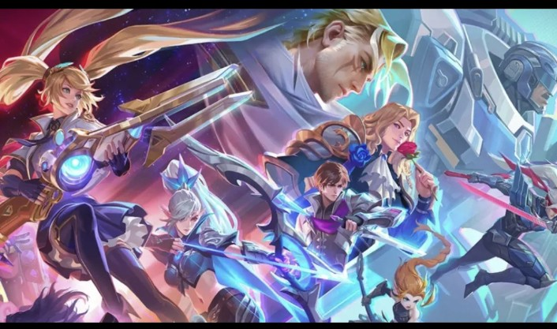
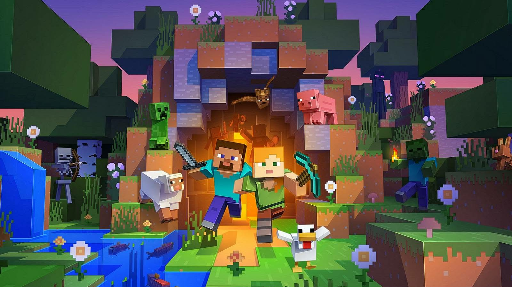
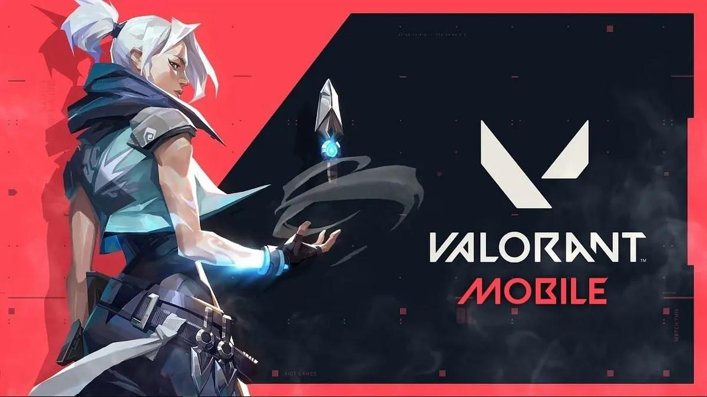

Jervy's favorite games
MOBILE LEGENDS
This is a moba games which is I think the most longest game I played for years, I think this is fun but sometimes toxic especially when you got a bad team.So now I'm playing this for fun and not to compete since if you do you will be just stressed out all the time.
MINECRAFT
One of the most popular game in the world this is really fun especially when you play with your friends and also you can add addons or mods in this game to make it more fun and build whatever you want.
POKE-MMO
This game is my favorite pokemon games since I can play different region in just one app and you can also play with your friends online or with just random people,they also make different events in this game which is really fun I really recommend this game for android gamers like me heh.

VALORANT
I actually just play this game recently and I'm playing it in android in china server which is the only server that are available currently, this is also fun and I really like gui of this game and there's a lot of character also.

BACK